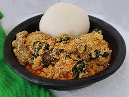

Egusi Soup

Egusi soup
Among the delicious soups we have in Nigeria, Egusi soup is one of the well known and generalized soup in
Nigeria. it is a traditional one-pot soup that combines blended melon seed, pepper, leafy vegetables, and meat.
It is nutty, spicy, and tasty.
Ingreidents
- Melom
- Red oil
- Water
- Seasoning
- Meat
- Stock and dry fish
- Crey fish
- Pepper and salt
- Vegetables
Egusi Soup Preparation Steps
- Add ground egusi(melon) mix with water to form a paste
- add oil and over medium heat for a while
- Add stock stock and dry fish and boil
- Add mixed melon bit by bit, do not stir, cover and allow to cook for some minutes
- Open and stir gently, then add crey fish, Seasoning, salt, meat etc and cook for 10 minutes
- Add vegetable and cook half-done
- Dish and serve with fufu, semo, garri amala etc